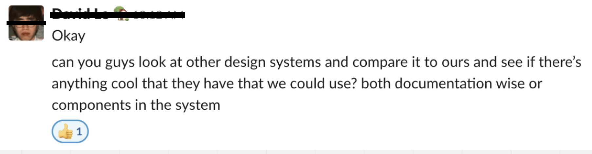
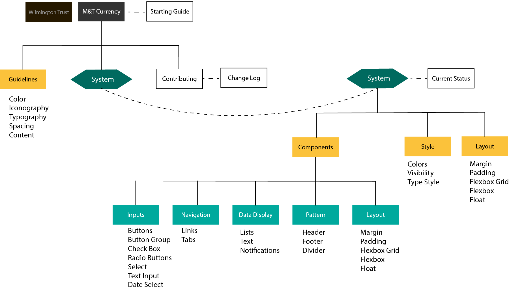

M&T Bank: Design System
Problem
Being an intern on the design system team, I had the opportunity to see the product launch and be with the team in its first couple of months.
I noticed that the newly developed design system was not being used.
Research
In order to break down the problem, Julia and I first learned more about design systems through resources like InVision’s Design System Handbook, Apple’s Human Interface Guidelines, Medium articles of people who worked on creating design systems.
Competitive Analysis
We researched various public design system documentation websites and took notes on four different categories: Consistency, Design, Development, and Interaction. Through the analysis, we found features on different documentation websites that heightened the user interaction.
Exploratory Interviews
We conducted interviews with 3 different groups with varying levels of knowledge of the Currency Design System.

Developer and designer of Currency Design System: David and Genevieve
Engineers, designers & product owners familiar with the Currency Doc site but new to the concept of Design Systems.
Engineers and product owners with no knowledge of Design System nor Currency.
Personas & User Flow
We segmented our users into three groups: Designers, Developers, Content creator and researched their needs in using the design system.
Then based on their roles, I created
Process
Information Architecture
Based on the user flow, we organized all of the components and guide pages into a new hierarchy of information.
Designers
First time using DSM
Pre-design
Continuous design process
Developers
First time using DSM/ Pre-dev
Continuous development process
Content Architecture
We went through each page of the website and stripped each text down to the core. We created inventory of each component and the core messages to find what was missing and what was extra. We filled in the missing context and designed for the extra.
Then, we took the core information on each website and created a consistent system throughout the site to display each component.
SOLUTION
Julia and I presented our findings and possible solutions to our team before we ended our time at M&T on Dec 2019 and started user testing before Genevieve could merge our works to create a new design for the design system documentation site.
Design Iteration
Throughout the 3 month period, Julia and I made around 100+ screens and created 6 enhancing versions of the website. We continuously worked to make the content and interactivity concise and intuitive. We proofread and re-designed pages for 18 components for both developer and designer.
Ultimately — we re-designed interaction & navigation, updated content & re-structured pages
User Testing
To test our latest re-designed version, we used Invision to create a full prototype and created prompts to test 3 out of the 5 design principles of human computer interaction:
- Does the new organization & content make sense (Perceivability)
- Can user find what they need easily (Consistency)
- Do users understand what each component on website will do (Affordance)
Take-aways
During my time at M&T, I fell in love with Design System and I was able to get hands on experience in:
- empathizing with the user
- prototyping
- user testing
- building information architecture